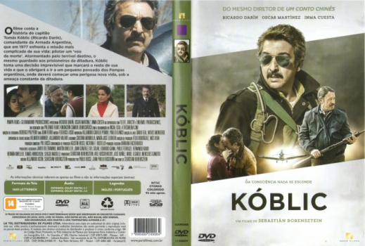

Kóblic [Legendado] (2016)
![link to Kóblic [Legendado] on TheMovieDb](../img/themoviedb.png)
There is nowhere to hide from yourself

Avaliação (TMDb):


6.2/10 (53 votos)
Avaliação (Usuário):
Outro Título:Koblic
País:Argentina, 92 minutos
Idiomas falados:Espanhol
Gênero(s):Drama, Suspense
Diretor(s):Sebastián Borensztein
Codec:MPEG-2 (DVD)
Número: 3010
Sinopse:
Argentina, período da ditadura militar da década de 70. Kóblic (Ricardo Darín), um ex-capitão das Forças Armadas, é responsável por coordenar as operações aéreas conhecidas como os "voos da morte", onde elementos considerados subversivos eram arremessados de dentro dos aviões diretamente ao encontro do mar.
Elenco:
Ricardo Darín, Inma Cuesta, Oscar Martínez, Marcos Cartoy Díaz
Tipo de mídia: DVD5,
Legendas: Inglês, Português
Alugado: Não
Tela: 16:9 Widescreen